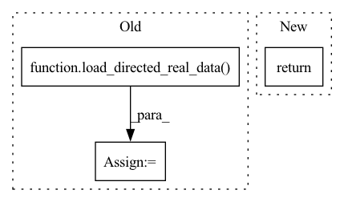

Pattern ID :19669

Before Change
directed_dataset = load_directed_real_data(dataset="WebKB", root="./tmp_data/", name="Wisconsin")
assert isinstance(directed_dataset, DirectedData)
assert directed_dataset.is_directed
directed_dataset = load_directed_real_data(dataset="cora_ml", root="./tmp_data/")
assert isinstance(directed_dataset, DirectedData)
assert directed_dataset.is_directed
directed_dataset = load_directed_real_data(dataset="citeseer", root="./tmp_data/")
assert isinstance(directed_dataset, DirectedData)
After Change
directed_dataset = load_directed_real_data(dataset="wikics", root="./tmp_data/", pre_transform=T.GCNNorm(), transform=T.ToUndirected())
assert isinstance(directed_dataset, DirectedData)
assert not directed_dataset.is_directed
return
def test_link_split():
Testing link_split()
In pattern: SUPERPATTERN
Frequency: 3
Non-data size: 3
Instances
Fragment ID: 64019107
Project Name: sherylhyx/pytorch_geometric_signed_directed
Commit Name: 604bcee2fdacbdb7a378881c33a3e9db46e074af
Time: 2022-02-11
Author: xzhang15@wpi.edu
File Name: test/directed_data_test.py
M Class Name: AnonimousClass
N Class Name: AnonimousClass
M Method Name: test_directed_datasets(0)
N Method Name: test_directed_datasets(0)
M Parent Class:
N Parent Class:
M File Name: test/directed_data_test.py
N File Name: test/directed_data_test.py
M Start Line: 21
M End Line: 48
N Start Line: 36
N End Line: 36
'>
Before Change
assert isinstance(directed_dataset, DirectedData)
directed_dataset = load_directed_real_data(dataset="WebKB", root="./tmp_data/", name="Wisconsin")
assert isinstance(directed_dataset, DirectedData)
directed_dataset = load_directed_real_data(dataset="citation", root="./tmp_data/", name="Cora_ML")
assert isinstance(directed_dataset, DirectedData)
directed_dataset = load_directed_real_data(dataset="citation", root="./tmp_data/", name="CiteSeer")
assert isinstance(directed_dataset, DirectedData)
return
After Change
directed_dataset = load_directed_real_data(dataset="WebKB", root="./tmp_data/", name="Wisconsin")
assert isinstance(directed_dataset, DirectedData)
assert not is_undirected(directed_dataset.edge_index)
return
'>
Fragment ID: 64019108
Project Name: sherylhyx/pytorch_geometric_signed_directed
Commit Name: 2dac3e6bd8195cc0edba4ec89d9e6b273f760615
Time: 2022-02-08
Author: He_YX@outlook.com
File Name: test/directed_data_test.py
M Class Name: AnonimousClass
N Class Name: AnonimousClass
M Method Name: test_datasets(0)
N Method Name: test_datasets(0)
M Parent Class:
N Parent Class:
M File Name: test/directed_data_test.py
N File Name: test/directed_data_test.py
M Start Line: 13
M End Line: 17
N Start Line: 12
N End Line: 19
'>
Before Change
assert torch.sum(data.test_mask) == 20*3*num_classes
assert torch.sum(data.seed_mask) == 2*3*num_classes
directed_dataset = load_directed_real_data(dataset="cora_ml", root="./tmp_data/")
data = node_class_split(directed_dataset, train_size_per_class = 20, seed_size_per_class = 5, val_size_per_class = 10, test_size_per_class = 20)
assert isinstance(data.seed_mask, torch.Tensor)
num_classes = len(np.unique(directed_dataset.y))
assert torch.sum(data.seed_mask) == 10*5*num_classes
After Change
assert torch.sum(data.train_mask) == 3*int(0.1*len(data.y))
assert torch.sum(data.val_mask) == 3*int(0.1*(len(data.y)-torch.sum(data.train_mask)/3))
assert torch.sum(data.test_mask) == 3*int(0.3*(len(data.y)-torch.sum(data.train_mask)/3-torch.sum(data.val_mask)/3))
return
'>
Fragment ID: 64019111
Project Name: sherylhyx/pytorch_geometric_signed_directed
Commit Name: 0ab3ea448ec25db3f720f238691e8231db963057
Time: 2022-02-14
Author: zhangxit@msu.edu
File Name: test/directed_data_test.py
M Class Name: AnonimousClass
N Class Name: AnonimousClass
M Method Name: test_node_split(0)
N Method Name: test_node_split(0)
M Parent Class:
N Parent Class:
M File Name: test/directed_data_test.py
N File Name: test/directed_data_test.py
M Start Line: 122
M End Line: 150
N Start Line: 149
N End Line: 149